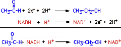

Energy, Enzymes, and Catalysis Problem Set
Problem 12 Tutorial: Energy requiring reactions in biological systems
Coupled Reactions
Enzymes can couple exergonic reactions with endergonic reactions to result in a coupled reaction that is exergonic overall. An exergonic reaction is one in which the energy level of the products is lower than the energy level of the reactants (a spontaneous reaction).
Consider the coupled reaction described in Problem 5 of this problem set. This is a redox reaction. All redox reactions are coupled reactions, since an oxidation reaction is coupled to a reduction reaction. The dehydrogenase enzyme reduces acetaldehyde to ethanol, which is an endergonic (energy-requiring) reaction:

The reduction of acetaldehyde is coupled to the oxidation of NADH to NAD+, which is an exergonic reaction. The oxidized NAD+ has a lower energy level than NADH.
The sum of these two reactions is the coupled reaction catalyzed by acetaldehyde dehydrogenase, shown on the bottom line in the figure above.


Department of Biochemistry and Molecular Biophysics
University of Arizona
Revised: October 2004
Contact the Development Team
http://biology.arizona.edu
All contents copyright © 1996. All rights reserved.